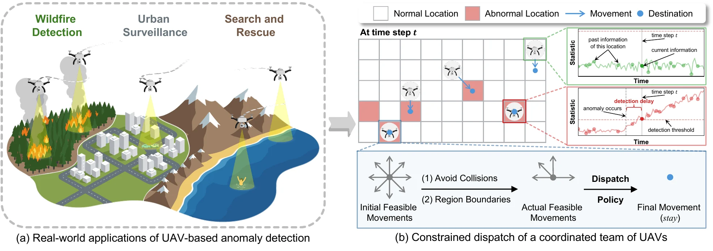
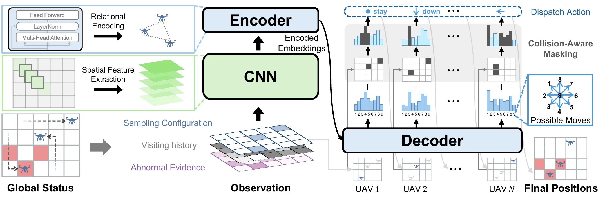
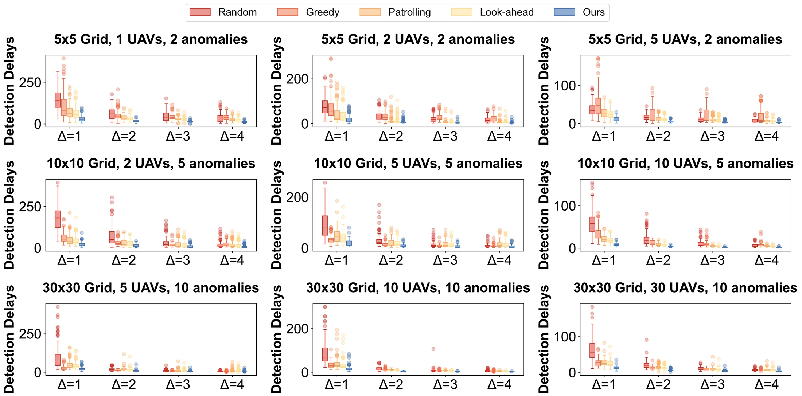
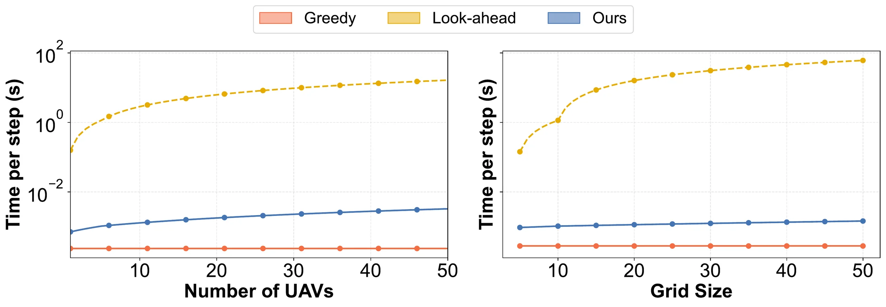
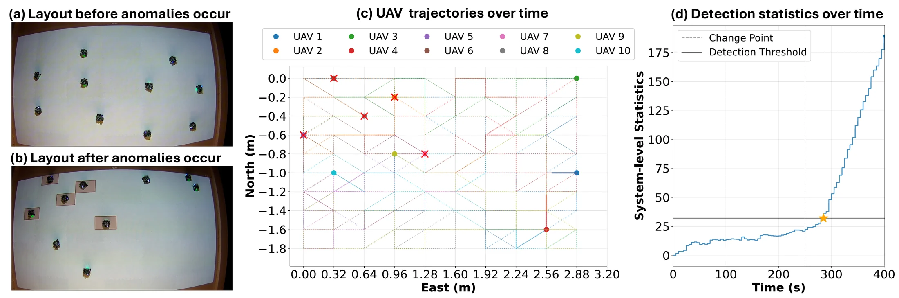
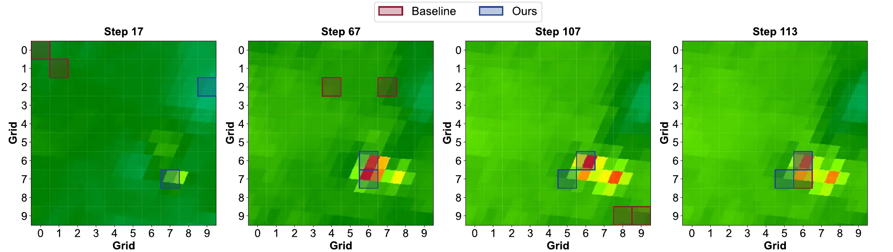

Projects / Coordinated control of robot and drone fleets
Learning Collision-Free Dispatch Policies for Route-Wise Decision-Dependent Anomaly Detection
Xin Xia1Chen Zhang2Kaibo Liu1
1 Industrial and Systems Engineering, University of Wisconsin-Madison2 Industrial Engineering, Tsinghua University
Advances in Neural Information Processing Systems (NeurIPS), 2026


A dispatch policy for UAV fleets that assigns destinations one vehicle at a time, so joint moves are collision-free by construction and decoded in linear time, with guarantees on coverage, focusing, and detection delay. Validated on the Robotarium and on a wildfire rebuilt from satellite frames.
A small fleet has to watch a large region
Each UAV observes only the location it visits, and anomalies may occur at unknown locations and times. Dispatch decides which locations are observed, and the observations update the evidence that guides the next dispatch.
The goal is quickest detection under false-alarm control: keep the mean detection delay after a change (ARL1) small while the mean time to a false alarm (ARL0) stays above a required level. Moves are local, must stay inside the region, and must not collide.

One episode, step by step
The trained policy on a 10×10 grid, running on a server. Set up a run and press Run.
- Normal Location
- Anomaly
- Movement
- Destination
At time step t = 0
DispatchNet samples a collision-free joint move without enumeration
The problem is formulated as a partially observable Markov decision process with decision-dependent observations. The policy network, DispatchNet, has an encoder for spatial features and inter-UAV interaction, and an autoregressive decoder that assigns moves one UAV at a time. A dynamic feasibility mask reserves the destinations of earlier UAVs for later ones, so every joint move is collision-free and is decoded in O(K+N) time for K locations and N UAVs.
Learning has two stages. Stage I trains the policy offline in simulated environments with PPO and proxy rewards. Stage II executes it online, mixed with uniform exploration.
- Feasible Movement
- Removed Movement
- Destination
- Movement
Illustration of the decoding rule

Coverage, focusing and detection delay are guaranteed
- Persistent coverage
- Every location keeps being visited, and none is left unobserved.
- Evidence-based focusing
- An isolated anomaly, once revisited, becomes hard to leave.
- Detection-delay bound
- The mean detection delay is bounded, and more observations of the anomaly shrink the bound.
- Clustered anomalies
- Clustered anomalies are still detected; UAVs may move within the cluster.
Detection delay under false-alarm control
| Environment | 5×5 to 30×30 grids, 1 to 30 UAVs, 2 to 10 anomalies |
|---|---|
| Anomaly | mean shift Δ ∈ {1, 2, 3, 4}, starting at a time drawn uniformly from 5 to 50 |
| Metric | ARL1 at ARL0 = 370, 1,000 runs per setting |

Per-step decision time

Deployment on robots and on a real wildfire
Robotarium: 10 robots, 5 anomalies from t = 250 s

Cherrywood wildfire (2021): 2 UAVs on a 10×10 grid rebuilt from satellite frames

BibTeX
@inproceedings{xia2026dispatch,
title = {Learning Collision-Free Dispatch Policies for Route-Wise Decision-Dependent Anomaly Detection},
author = {Xia, Xin and Zhang, Chen and Liu, Kaibo},
booktitle = {Advances in Neural Information Processing Systems (NeurIPS)},
year = {2026}
}